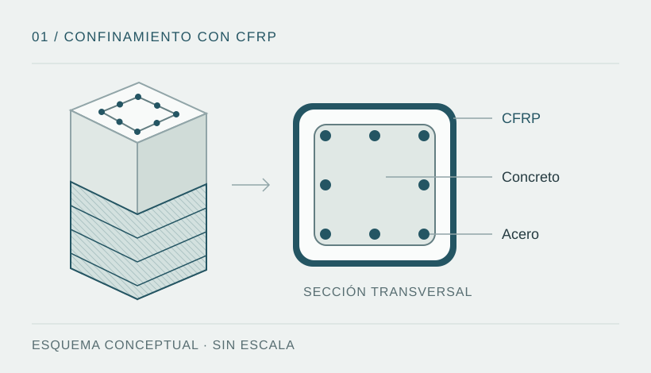

Problema técnico y objetivo
El confinamiento pasivo con fibra de carbono puede modificar la respuesta inelástica de pilares de concreto armado. El problema de modelación consiste en representar esa contribución y distinguir sus efectos sobre resistencia, deformabilidad y rigidez.
Objetivo: comparar la respuesta lateral del pilar de estudio en las condiciones BASE y CFRP, a partir de un modelo no lineal calibrado frente a un ensayo de referencia. Las conclusiones corresponden a las condiciones particulares descritas en la investigación.

Modelo y calibración
- Modelación de una sección de fibras con núcleo y recubrimiento de concreto, acero longitudinal y relaciones constitutivas diferenciadas.
- Uso del material Concrete04 para ambas condiciones, con confinamiento equivalente en el caso reforzado.
- Calibración frente a la columna C7, atribuida en la documentación del proyecto a Nickelson y colaboradores (2022). La cita completa y los registros del ensayo no están adjuntos; esa atribución está pendiente de comprobación.
- Comparación BASE/CFRP de fuerza lateral, rigidez, deriva y energía, manteniendo explícitas las hipótesis del modelo.
Procedimiento de trabajo
- Definir el modelo: geometría, materiales, carga axial, condiciones de borde y discretización de la sección.
- Aplicar el protocolo cíclico: organizar los objetivos de desplazamiento y registrar la respuesta y las condiciones de convergencia.
- Calibrar la condición de referencia: comparar la respuesta numérica con los registros experimentales y evaluar el error.
- Comparar el pilar de aplicación: ejecutar los escenarios BASE y CFRP y separar las comparaciones a igual deriva de las comparaciones entre máximos.
- Documentar el alcance: conservar parámetros, criterios de ajuste, salidas y limitaciones para permitir una revisión posterior.
Este procedimiento resume el trabajo descrito en los documentos del proyecto; los archivos necesarios para ejecutarlo no forman parte del portafolio.
Resultados reportados
Los siguientes valores proceden de la documentación del proyecto. No han sido verificados de forma independiente con archivos fuente o datos brutos disponibles en este repositorio.
También se reportan fuerzas máximas positivas de aproximadamente 675 kN (BASE) y 732 kN (CFRP), alcanzadas a derivas distintas. Esa comparación entre máximos no equivale al incremento a +5 % de deriva.
La rigidez inicial reportada pasa de aproximadamente 43,16 a 41,46 kN/mm. Dentro de este caso, el refuerzo no se interpreta como un aumento automático de la rigidez inicial.
Fuentes y alcance
| Disponible en el portafolio | Pendiente de incorporar |
|---|---|
| Resumen metodológico y cifras reportadas. | Memoria técnica completa, versión de OpenSeesPy y parámetros de modelación. |
| Esquema conceptual del refuerzo. | Scripts, datos brutos, protocolo de carga, registros de convergencia y curvas auténticas. |
| Identificación provisional del ensayo de referencia. | Cita bibliográfica completa, procedencia y permisos de uso de los datos experimentales. |
Trabajo técnico
El estudio reúne formulación de modelos no lineales, procesamiento de datos con Python y calibración de parámetros. La interpretación distingue fuerza máxima, respuesta a igual deriva y rigidez inicial para evitar atribuir al confinamiento una mejora uniforme de todos los indicadores.